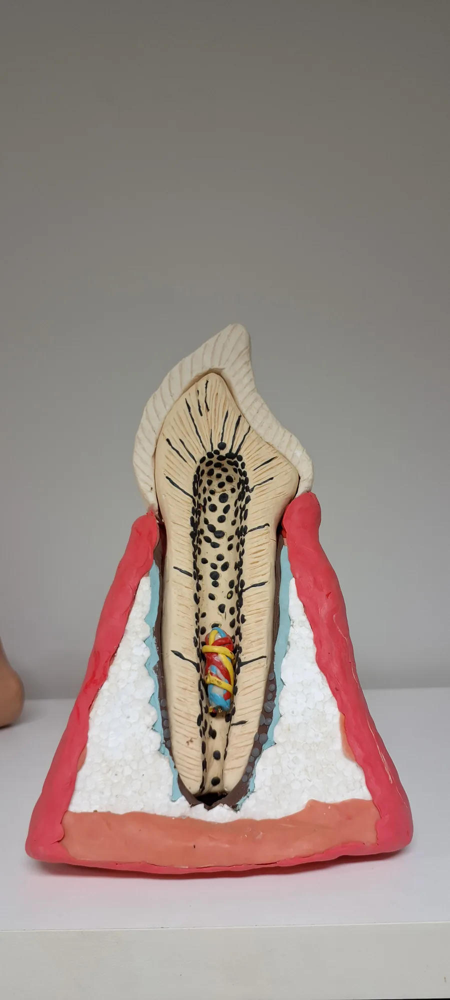
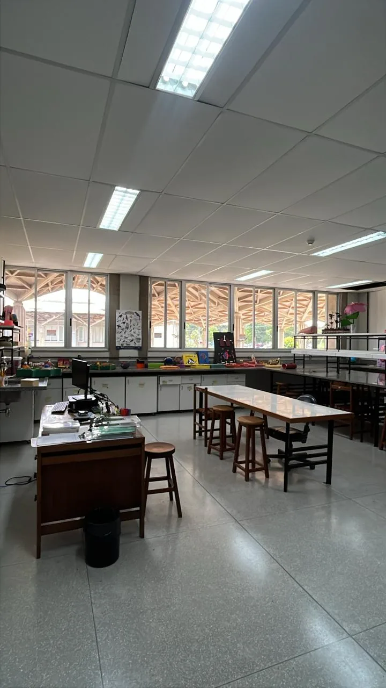
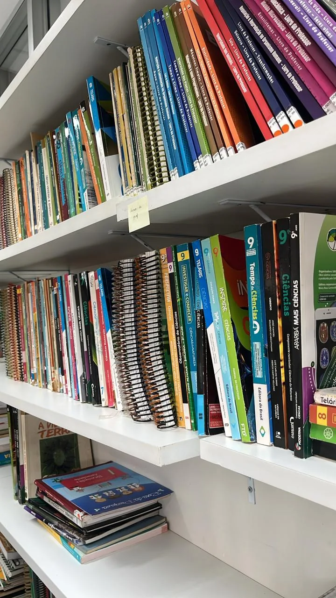
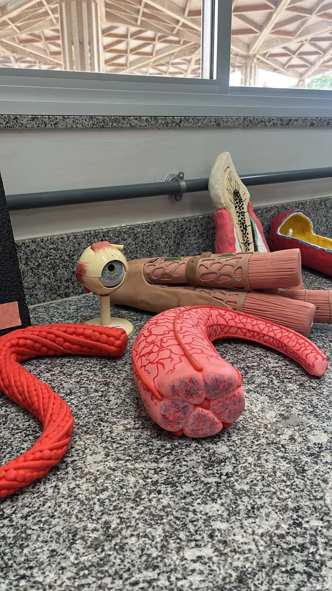
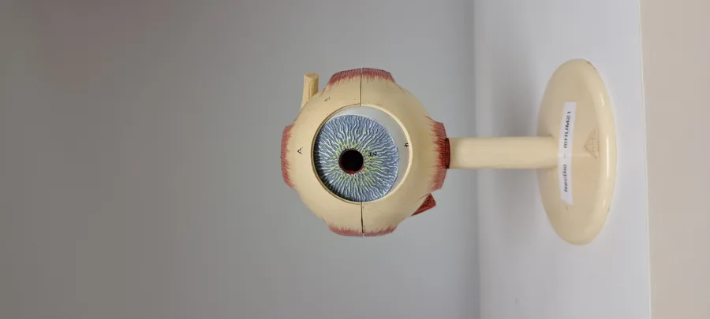
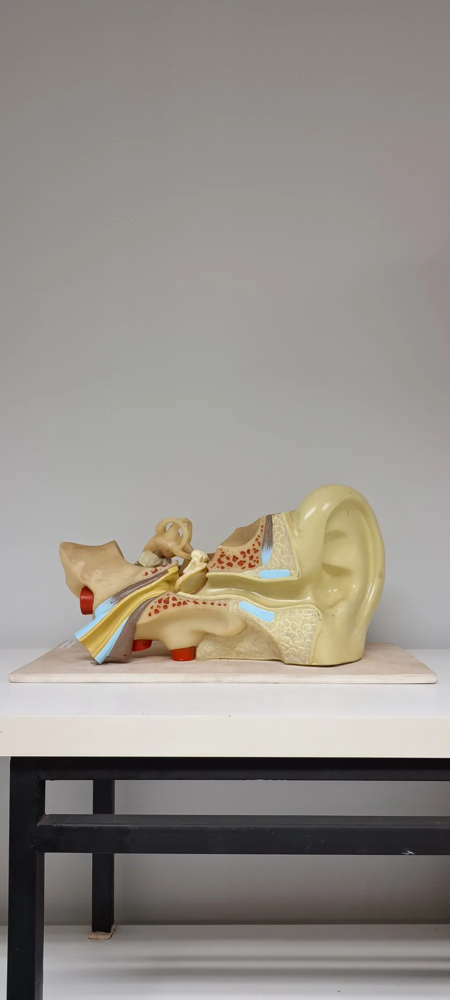
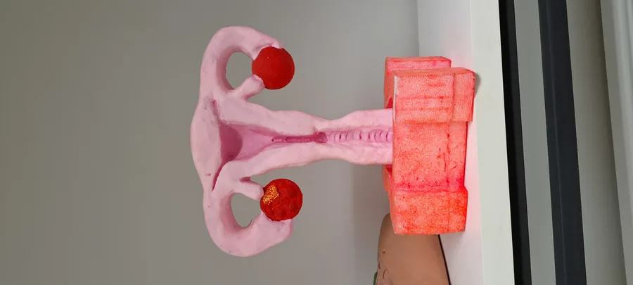
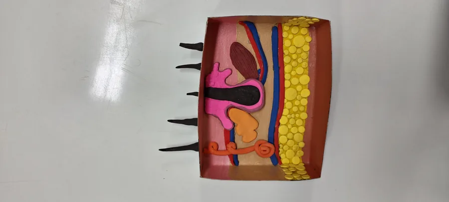
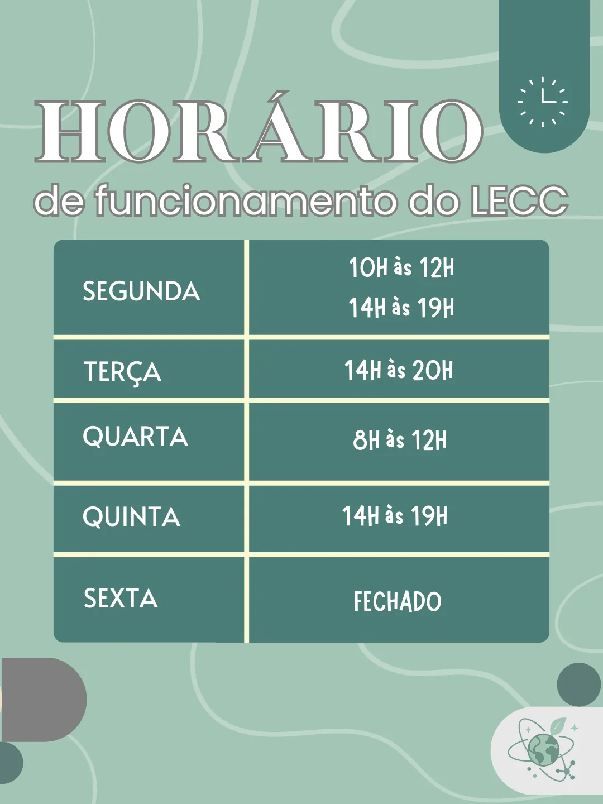

Modelo – Dente
Estrutura dentária em corte, para o estudo de esmalte, dentina e polpa.
Um laboratório multidisciplinar que oferece recursos didáticos para atividades e projetos, com o objetivo de dar subsídios à formação de estudantes em Ciências Biológicas e promover discussões sobre o ensino-aprendizagem de Ciências Naturais e Biologia. Também apoiamos e realizamos ações culturais.
Estamos no NECBio, no Instituto de Ciências Biológicas da Universidade de Brasília, Campus Darcy Ribeiro (DF).



Peças tridimensionais usadas em aulas de anatomia e histologia, disponíveis para empréstimo a estudantes e professores.

Estrutura dentária em corte, para o estudo de esmalte, dentina e polpa.

Globo ocular desmontável, útil no estudo da visão e da óptica.

Ouvido externo, médio e interno para abordar audição e equilíbrio.

Representação do ciclo ovariano, usada em aulas de fisiologia.

Camadas da pele em corte, com anexos cutâneos e terminações nervosas.
